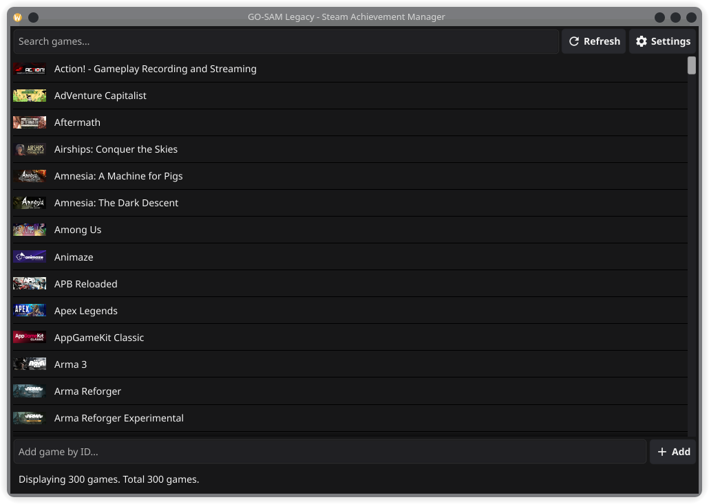
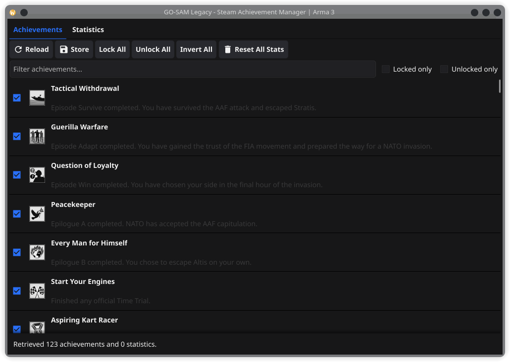

GO-SAM
A modern, cross-platform port of Steam Achievement Manager.
View and toggle achievements, and edit stats, for any game you own — by talking directly to your local Steam client, the same way a game itself would. Native on Windows and Linux, no .NET Framework required.

What it does
Lists games you own, pulled from the official Steam Web API and cached locally.
View unlock status and timestamps. Toggle, lock, unlock or invert in bulk, filter by name or state.
View and modify a game's numeric and float stats, respecting the ones a game marks as protected.
Reset all stats — and optionally achievements — for a game, with confirmation.
One Go binary, no cgo for the Steam interop layer, works the same way on Windows and Linux.
Checks GitHub for release notes on startup and shows what's new.
Talks to Steam like a game would
Instead of the public Steamworks SDK — which needs each game's own credentials — go-sam talks directly to your locally installed Steam client's native library, the same low-level approach the original SAM used. On Go, this happens without cgo, using purego to call the client library's functions directly.
Reads your owned-games list from the official Steam Web API.
Talks to your running Steam client through its native library — steamclient.dll on Windows, steamclient.so on Linux.
Parses the achievement and stat schema Steam already caches locally for each game you own.
See it in action

Before you start
The Steam client installed and running, with you logged in.
A free Steam Web API key, entered once via the in-app Settings screen.
Go 1.26+ — only if building from source.